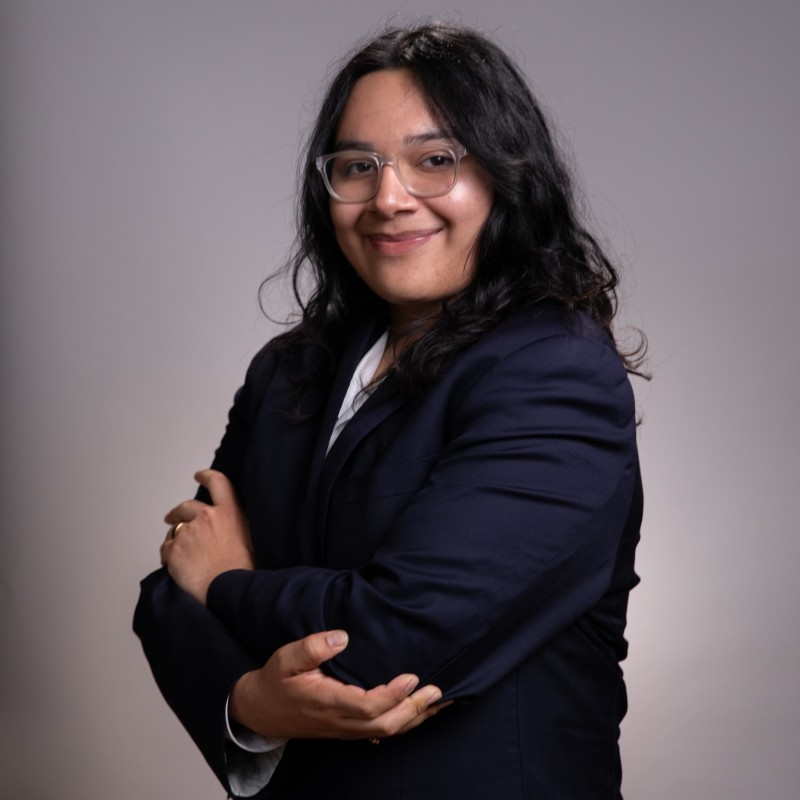

Hellooo, my name is Alfredo (or Fredo). I am a graduating senior here at UTD majoring in UX Design. My interests are mostly in the UX field, I am also interested in other design categories like graphic design, digital drawing, and almost any creative space. At UTD I am a Student Engagement officer for the UX Club, a member for AIGA, and a member for ALPFA. I plan to pursue my masters in design after graduating, and keep on learning and developing my skills at the industry level standards.
